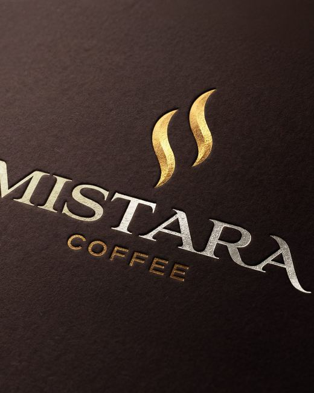
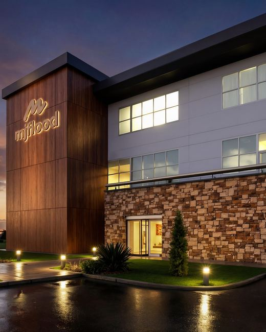
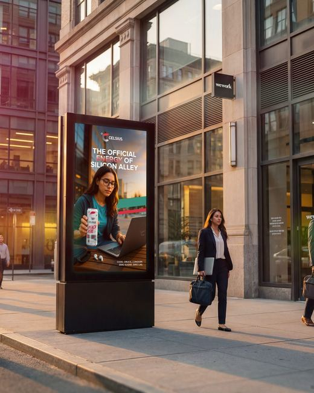
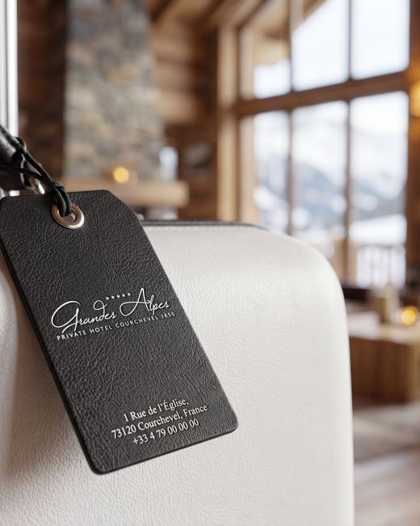
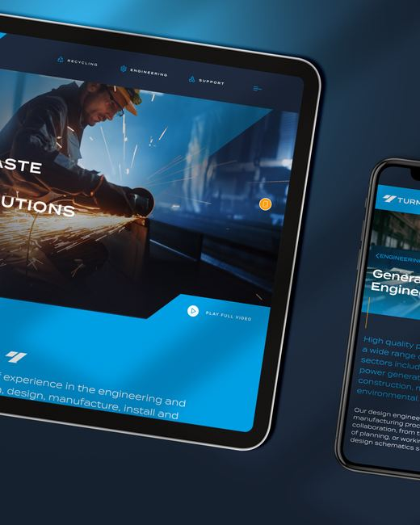

A list is faster to scan than a grid, but it hides the work. This keeps the speed and gives the image back, tracked to the cursor with inertia and velocity skew.
Hover the index. The preview leads, the frame follows, the skew reads the speed.